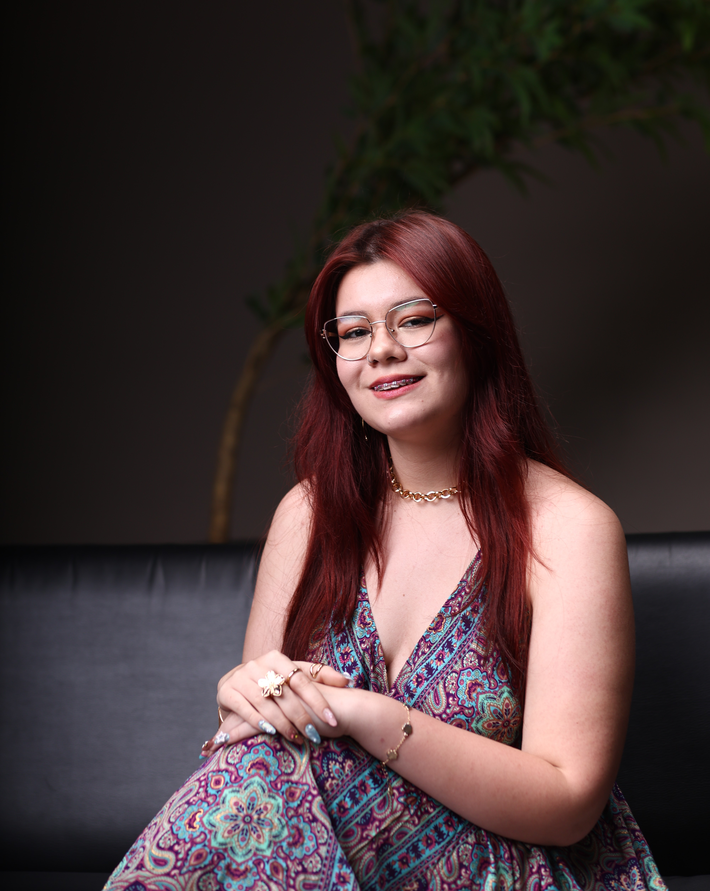
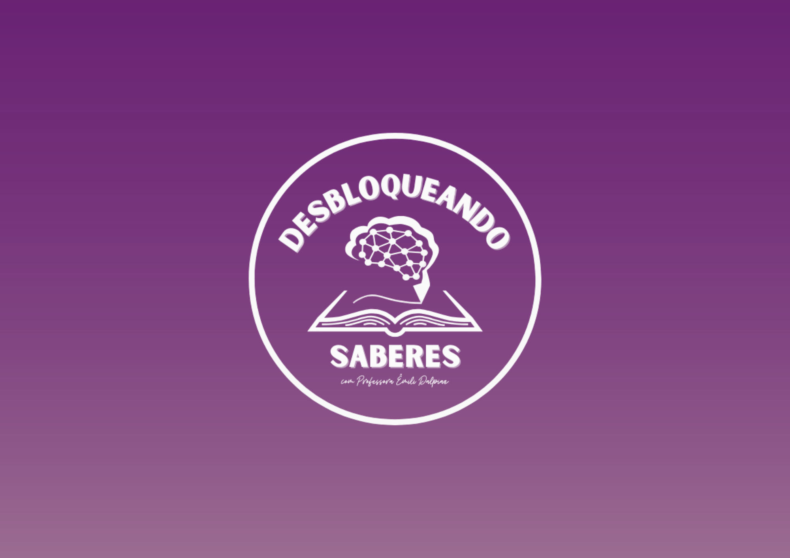
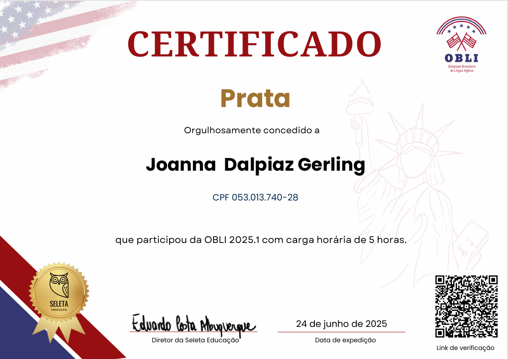
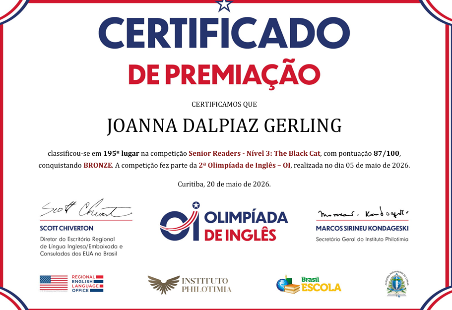
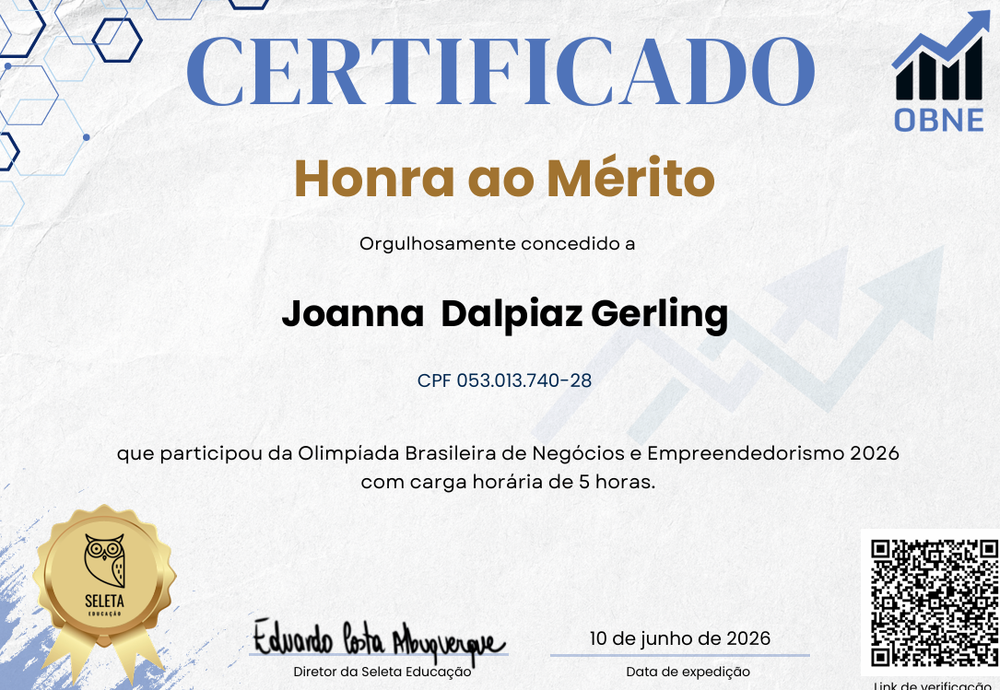
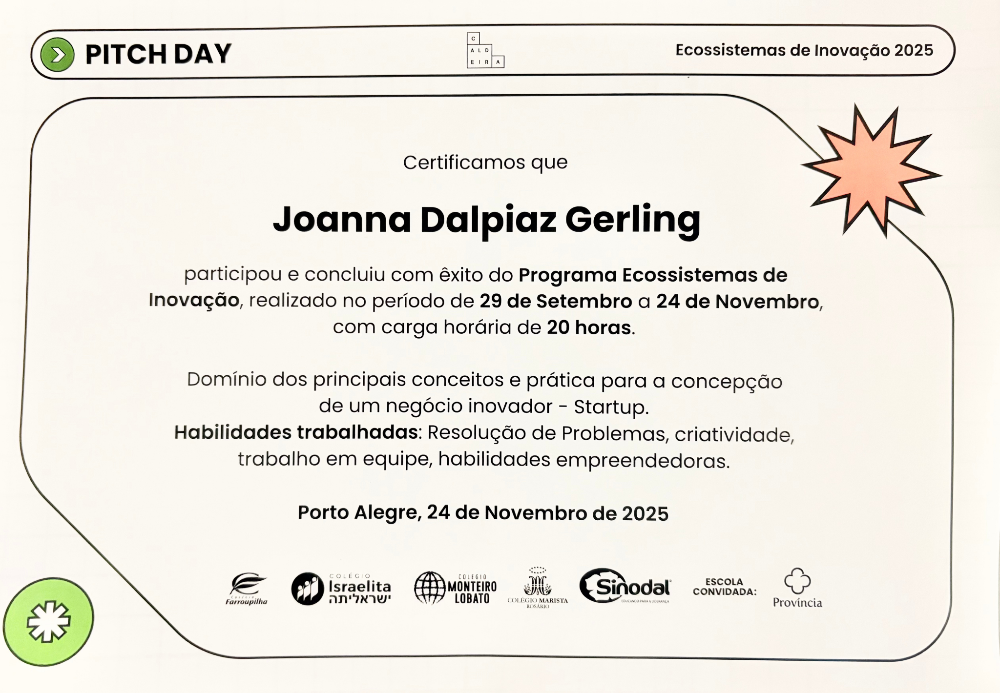
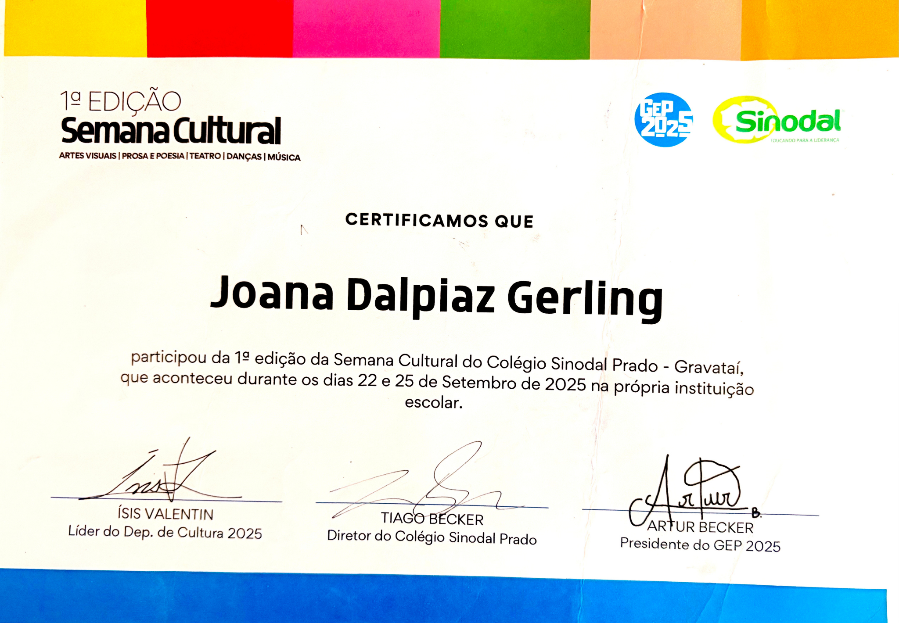
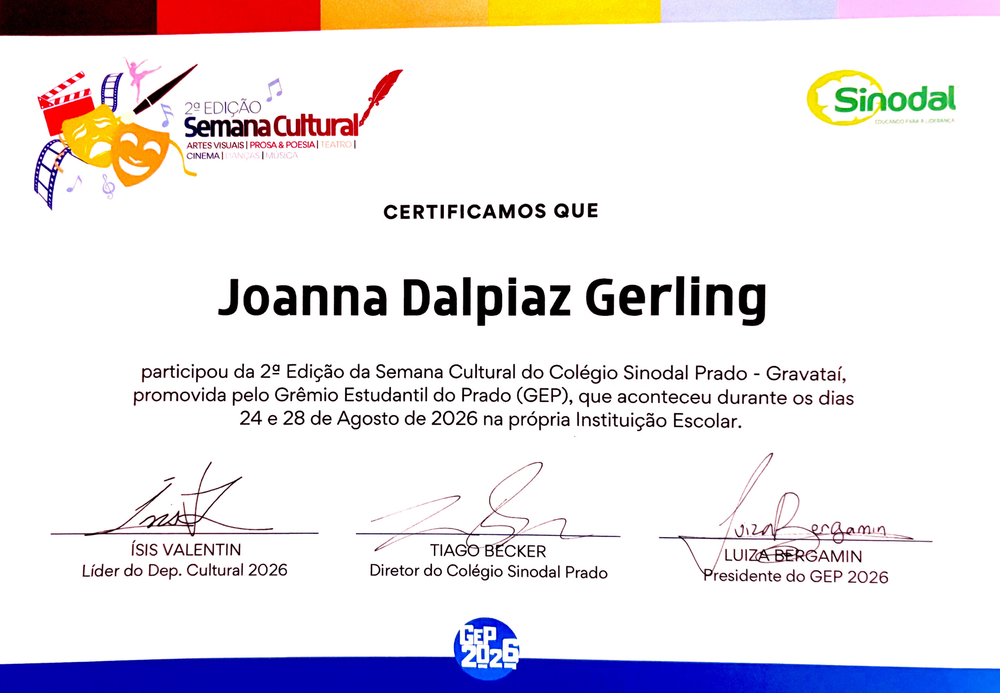
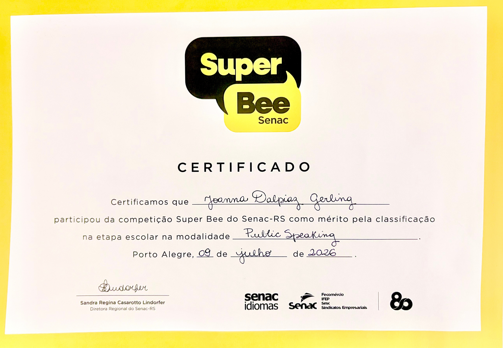

Sou uma desenvolvedora movida pela curiosidade e pela vontade de transformar ideias em projetos reais. Gosto de explorar novas tecnologias, aprender na prática e encontrar maneiras criativas de resolver problemas. Para mim, desenvolver vai além de escrever código: é criar experiências, dar vida a ideias e descobrir, a cada projeto, novas possibilidades.
Abaixo estão alguns dos meus projetos realizados desde que entrei no mundo do desenvolvimento:
A Caminho Delas nasceu do desejo profundo de construir um espaço online seguro, acolhedor e cheio de significado. Um lugar onde mulheres de todas as idades possam se sentir ouvidas, representadas e fortalecidas.
Acessar Projeto
Desbloqueando Saberes nasceu com o propósito de compartilhar os conhecimentos adquiridos ao longo da minha trajetória profissional, unindo experiências e aprendizados para tornar o conhecimento acessível, despertar a curiosidade e transformar o aprendizado em uma jornada leve e prazerosa.
Acessar ProjetoDurante as aulas de programação web com php, desenvolvi um formulário de cadastro para pacientes do hospital fictício HealthyCare.
Acessar ProjetoSentiu-se interessado(a) em meu trabalho? Você pode baixar meu currículo para conhecer mais sobre minhas experiências, habilidades e trajetória profissional. Lá, compartilho detalhes sobre minha formação, projetos e qualificações que complementam o que viu aqui no portfólio!
Baixar CurrículoAqui estão algumas das minhas conquistas mais significativas ao longo da minha jornada profissional:
No ano de 2025 realizei a Olimpíada Brasileira de Inglês e conquistei medalha de prata.

No ano de 2026 realizei a Olimpíada de Inglês e conquistei medalha de bronze.

No ano de 2026 realizei a Olimpíada Brasileira de Negócios e Empreendedorismo e conquistei medalha de honra ao mérito.

No ano de 2025, participei do curso Ecossistemas de Inovação realizado no Instituto Caldeira, adquirindo conhecimentos sobre gestão de inovação e desenvolvimento de soluções criativas.

Participei da 1ª Edição do Semana Cultural no Colégio Sinodal Prado, expondo minhas criações artísticas.

Participei da 2ª Edição do Semana Cultural no Colégio Sinodal Prado, expondo minhas criações artísticas.

Participei do Speelling Bee promovido pelo Fecomércio Senac-RS, demonstrando habilidades em inglês e conquistando colocação na semifinal estadual.

Se você gostou do meu trabalho e deseja entrar em contato, fique à vontade para me enviar um e-mail ou me encontrar nas redes sociais. Estou sempre aberta a novas oportunidades, colaborações e conexões profissionais. Será um prazer conversar com você!
Enviar E-mailOu me encontre nas redes sociais:
LinkedIn Instagram© 2026 Joanna Dalpiaz Gerling. Todos os direitos reservados.